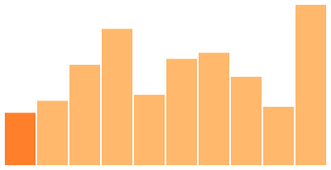
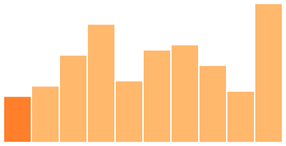
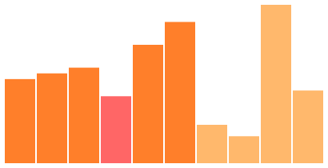
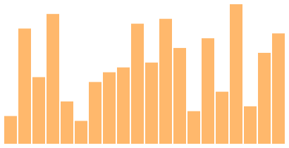

CS3460: Data Structures
Sorting Algorithms
CS3460: Data Structures & Algorithms
Sorting Algorithms
Sorting
- Given a sequence, permute the elements so that they are in monotonically non-decreasing order.
- This is a nice way to study a variety of algorithm design techniques.
- Applications:
- Binary search, median finding, selection, order statistics
- Element uniqueness, grouping elements, closest pairs
- Graph algorithms, computing matchings, shortest paths, spanning trees
- Machine learning classification, recommendation, data compression
Bubble Sort - Iterative Refinement


- Repeatedly scan the array, swapping out of order pairs of consecutive elements.
- Runs in $O(n^2)$ time.
- Bubble sort is stable (relative order of equal elements is preserved between the input and output), and in-place (uses strictly less than $n$ extra space).
Selection Sort
 


- Select the smallest element from the unsorted suffix of the array, swap it into its correct position, and repeat.
- Runs in $O(n^2)$ time.
- Selection sort is certainly in-place, but because it swaps non-adjacent elements, it is not stable.
Insertion Sort - Incremental Construction


- In each iteration, enlarge the sorted prefix of the array by one element. Introduce the first element of the unsorted suffix by swapping it to the left until it is in place with respect to the sorted prefix.
- Runs in $\Theta(n+k)$ time, where $k$ is the number of inversions, worst case $O(n^2)$.
- Each swap reduces the inversion count by $1$.
- If the input is nearly sorted, the number of inversions is small and insertion sort runs in linear time!
- Insertion sort is stable and in-place.
Mergesort - Divide and Conquer

- Given a sequence, recursively sort the left and right halves of the array, then merge the two resulting sorted subarrays into one (in linear time).
- Runs in $O(n \lg n)$.
- Can prove correctness inductively on the length of the subarrays.
- Mergesort is stable, but not in-place, because an additional $O(n)$ space needed for merge.
Mergesort Analysis
- Think from the perspective of a single element.
- It takes $\Theta(n)$ time to merge two lists of combined length $n$.
- From that element's perspective, $O(1)$ work was done to them.
- For a particular element, the total work done to it is equal to the number of merges it participates in.
- It only takes $O(\lg n)$ merges due to successive halving.
- Therefore, it takes $O(n \lg n)$ work overall.
Quicksort - Divide and Conquer
- Given a sequence, partition the array based on a pivot element (in linear time), then recursively sort the left and right subarrays.
- How do we partition in linear time?
- Runs in $O(n \lg n)$.
- Can prove correctness inductively on the length of the subarrays.
- Quicksort is in-place, but not stable, because our partition swaps non-adjacent elements.
Quicksort Variants
- Running time of quicksort depends entirely on good partitions, which depend on the choice of pivot.
- Simple Quicksort: choose pivots using a simple deterministic rule, such as first element, last element, middle element.
- $\Theta(n \lg n)$ if "lucky," worst case $\Theta(n^2)$.
- Deterministic Quicksort: pivot on the median element, which we can find in $\Theta(n)$ time with quickselect.
- $\Theta(n \lg n)$, but not great performance in practice.
- Randomized Quicksort: choose pivot at random.
- $\Theta(n \lg n)$ with high probability, and very good performance in practice (competitive with mergesort).